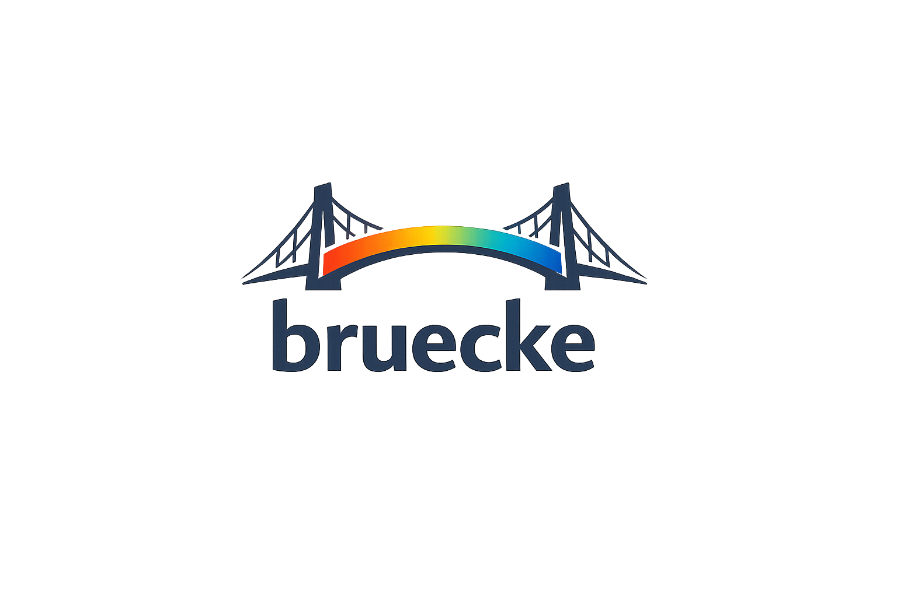

import math, random
#
balls = [(random.randint(50,750), random.randint(50,500))
for _ in range(20)]
def frame(t):
color(10, 10, 30); rect(0, 0, 800, 600)
for i, (bx, by) in enumerate(balls):
color(80 + i*8, 140, 255)
circle(bx + math.sin(t+i)*30, by, 12)
color(255, 220, 80)
circle(mouse_x, mouse_y, 8)
| bruecke | Pyodide / PyScript | p5.js / Processing | |
|---|---|---|---|
| WebGPU · GPU · 60 fps | Canvas 2D / DOM | Canvas 2D | |
| ✅ | ❌ | ||
| ✅ 3 | ❌ | ❌ | |
| ✅ | ⚠️ CDN | ⚠️ CDN | |
| ✅ | ❌ | ||
| ❌ stdlib | ✅ | N/A |